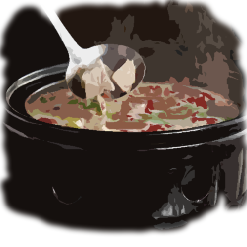

그녀를 믿기로 한다.
그녀는 나쁜 사람같아보이진 않지만, 당신이 뭘 알겠는가. 당신은 심지어 어디있는지도 모르지 않는가. 당신은 그저 이게 나쁜 선택이 아니였다고 믿고 있는 것이다.
당신은 그녀의 뒤를 따라 들어갔고 그녀는 당신 뒤의 문을 잠궜다.
아.. 아마도 이건 실수였을지도 몰라. 당신은 탈출할수 있는 다른 방법이 있나 서둘러 살펴본다. 아마도 뒤쪽 부억이나 방의 뒤쪽에 있을 듯하다. 아니면 그녀를 밀치고 도망가는거야. 찾아보자.. 테이블은 당신이 들기에 꽤 무거워보이고, 아 저기 의자가 있다. 저거면 당신이 충분히 노인한테 던져버릴 수 있을 듯하다.
그녀는 부억으로 들어갔고 냄비하나를 스토브위에 올렸다. "자리에 앉아."
당신은 당신이 그렇게 해야하나 확신이 들지않는다. 하지만 이미 냄비는 뜨거워지고 있고, 집에서 끓인 듯한 구수한 냄새가 난다. 이게 당신의 몸을 편안하게 만드는 듯 해서 앉기로 한다.
"집에서부터 멀리 멀리도 왔구나.